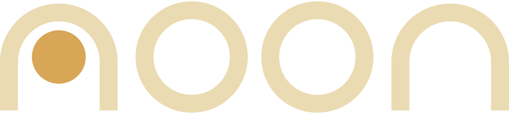

Run coding agents side by side. Watch each one move across a live map of your code.
Download for MacVersion 0.1.0 · Free · macOS 27 or later on Apple silicon
Works with Claude Code and Codex, signed in with your own accounts
Every agent on the map
Each agent is shown at the file it last touched.
A workspace per task
Each task starts from a fresh checkout of your current commit, on its own branch. Uncommitted edits and ignored files stay behind.
~/code/shopmain · 3f2a9c1
- src/
- api/limits.ts M
- .env ignored
- node_modules/ ignored
Workspace Cleanup frees a workspace once its task is merged and stopped, after you confirm · running tasks are never touched
Several agents at once
Answer one while the others keep working.
Click a terminal
Only commits merge
Merge adds a merge commit on your branch. Nothing is pushed.
Merge a finished task here or in the window above
Your Mac, your accounts
Noon runs on your Mac and starts the agents you already use.
- Your own agentsNoon starts the Claude Code or Codex you've installed and signed in to. It never signs in for you, and the agents talk to their providers directly.
- No sign-up, no analyticsNoon has no account and collects no usage data. Your code goes only where your agents send it.
- Notarized by AppleEach download is signed with a Developer ID and notarized. Its SHA-256 is listed at the bottom of this page.
- Nothing is pushedMerge makes a merge commit on your Mac. When and where to push is up to you.
Questions
How do I push, or open a pull request?
With your usual Git tools. Noon never pushes. Merge adds a merge commit to your project's branch on your Mac, with only the task's commits in it, and runs your repository's Git hooks as git merge would.
Which agents does Noon work with?
Claude Code, and Codex 0.160.0 or later. Noon shows their reads, edits and approval requests. Other command-line agents, such as Gemini CLI and OpenCode, can run in a task's terminal, and the map follows the files they write.
Is a task's workspace a sandbox?
No. A workspace is a Git worktree, a separate checkout of your project. An agent can reach any files its permission settings allow, so review its approval requests.
Why macOS 27?
Noon is built and tested on macOS 27 on Apple silicon, so that's what it supports today.
What else do I need?
Git from Apple's Command Line Tools, which Noon offers to install, and Claude Code or Codex, installed and signed in. Noon's window needs at least 1120 × 720 points, and it has a dark appearance only.
Is Noon open source?
No. Noon is free to use for personal or commercial work, but its source isn't public. The license has the details.
Get started
- Apple silicon
- macOS 27+
- Claude Code or Codex
- Free
- Download Noon and open the ZIP.
- Move Noon to your Applications folder, then open it.
- Add a Git repository and start a task.
or with Homebrew: brew install --cask snehith01001110/noon/noon